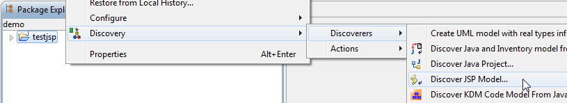
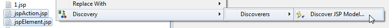
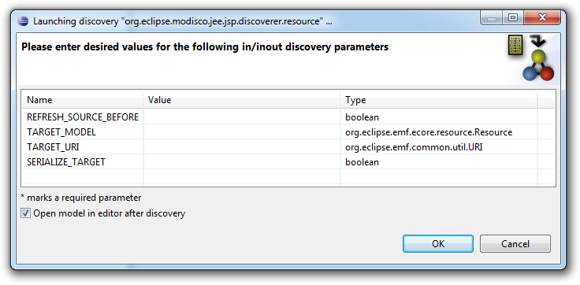
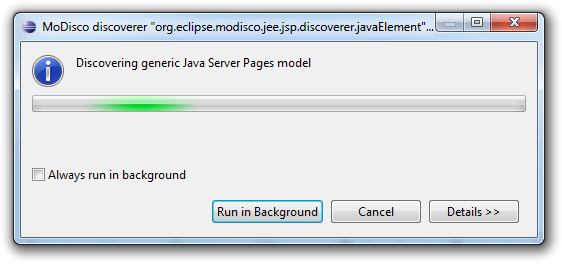
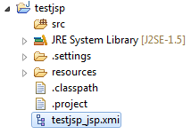
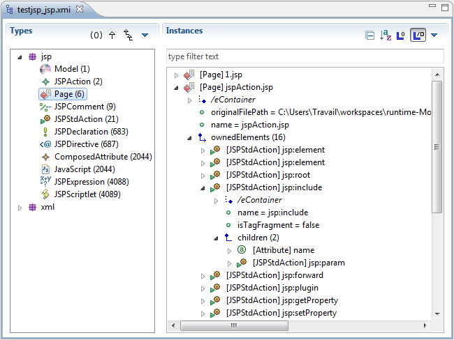
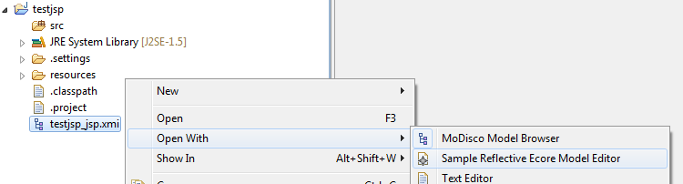
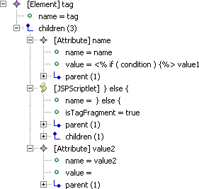

Quality disclaimer: this JSP Discoverer was tested on many files, both well-formed and not well-formed.
The plug-in provides the user with a contextual menu to easily create JSP models.
By right-clicking on a JSP Project in the Eclipse Package Explorer view and choosing Discovery > Discoverers > Discover JSP Model..., you can quickly create the JSP model of your application:

You can also select one or several files to create a model for each one of them:

A discovery parameters dialog opens to let you specify the parameters of the discovery:

Once launched, a progress dialog will appear as soon as the operation begins. Depending on the size of your application, the reverse engineering process might take some time to complete:

At the end of the process, the newly created model file is added to the root of your project if you set SERIALIZE_TARGET to true:

And the model is opened in the default model browser if you selected Open model in editor after discovery:

The JSP XMI files (with a filename ending in "_jsp.xmi" by convention) can be opened in any model browser:

Because the JSP language is used to generate some content, JSP constructs can be placed almost anywhere in the file, which implies some limitations.
This is why the "isTagFragment : EBoolean" attribute was added. In fact, everything contained in a tag declaration, as in its body, is considered as a children of this tag. It is indeed necessary to be able to differentiate whether the JSP tag is used to generate the tag description, or its body.
Some ways of implementing JSP might cause some problems with the parser, especially for the evaluation of tag attributes. What was expected to be found is some kind of syntax like :
name="value" or name='value' or even name=value
Sometimes we were faced with implementations like :
<tag name=" <% if(condition){ %> value1" <% }else{ %> value2" <% } %> >
The parser finds the opening double quote for the attribute's value, then looks for the closing one.
The returned value will be:

with an exception raised on the last double quote, because '=' is expected.